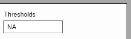

Writing conditions step by step example
R GUI DialogCreator is an ElectronJS based application which can be used to create highly customized dialogs for specific functions in R packages.
After installing and opening the application, the following main window can be seen.
The main window is organized into four sections. The left side contains the list of the available elements that can be added to the dialog, the bottom side contains the dialog's properties, the middle part (here colored in gray) is going to host the actual dialog, and finally the right side contains the properties of the selected elements, which can be seen after selecting an element.
On the left side of the main window you can find a list of available elements.
To add an element, first you must create a dialog otherwise you will get a notification.
After creating a dialog we can click on any of the elements to add them to the dialog. The elements can be moved using the "drag and drop" method or by setting their left and top position in the elements properties.
While drag and drop an element, the left and top positions will be saved automatically.
The dialog selected element is going to be highlighted through a blue dashed border.
Appears only on Mac Os and is specific to this system.
It is different from a system to another. On a MacOs the "Quit" option can be found in the "Electron" menu. On Windows and Linux the "Quit" option can be found in this menu.
From the "File" menu you can create a new dialog, preview the current dialog, load a dialog that was previously saved or save the current dialog.
If you are trying to load a dialog and another is already open you will get a notification asking if you would like to override the current one.
Again it is system specific. On a MacOs there are two more system specific options (the "Start Dictation" and the "Emoji & Symbols").
You can find the "About" and "User Manual" sections.
A new dialog can be created by clicking on the top menu File / New or by the combination of keys Cmd + N (on MacOS systems) or Ctrl + N (on Windows and Linux systems).
After creating a dialog we can now access the dialog's properties.
The dialog's properties are populated with default values immediately after creating the dialog.
The dialog's properties consist in:
Updates are saved when the enter key is pressed or by moving the focus to a different element.
The "Syntax" window users can write the function for which the dialog is built and set the defaults for all the elements. For example: if a checkbox is checked or unchecked.
Also here if you press the "Syntax" button, the dialog's syntax window will open.
There are available only ten types of elements. These are: button, checkbox, container (can be used for datasets or variables), counter, input, label, radio, select, separator and slider.
All elements have in common the "Name (ID)" field in the General section.
This field is used as a unique identifier for elements and can be filled only with lowercase letters and numbers without any spaces.
All elements have a section for writing conditions
After clicking the conditions button a new window is going to open, the element's conditions window.
Here you can write conditions for the dialog's elements, every element has its own conditions. In the above example the conditions window would be for an element called "Button1".
Writing a condition can be done like this: "show if checkbox1 == checked;". Adding this condition to an element would make the element visible when a checkbox element with the name (id) "checkbox1" is checked. Every condition is made from two parts separated by an "if", that ends with a semicolon. For example: (the left side) if (the right side);
The | (pipe), & and () can be used to write complex conditions. For example: setValue = ‘1' if element1 == checked | (element2 == checked & element3 == selected);
Be careful to not invalidate your condition. If you would have another condition for the same element that would say something like: setValue = 0 if element1 != checked; the second part of the first condition would never run.
Here we have methods (what we want to do to an element) and these are:
setValue:
For example: setValue = 'some value' if element == condition; (the ending semicolon is mandatory)
You can set a value to the following elements:
check, uncheck: Can be used only for elements of checkbox type
select, deselect: Can be used with elements of radio box type
show, hide: Can be used with all elements
enable, disable: Can be used with all elements except Label and Separator.
Here we have conditions and properties, like an element's status (visible, checked, selected, enabled, value)
You can write conditions based on these operators:
== and != for checked, selected, visible, enabled, value (like: 5, 'some value')>= and <= for numerical values| and & for expressions (like: "element1 == checked & element2 != checked")
() parentheses for grouping expressions
Element1, type input, conditions:
setValue == ‘some value' if radio1 == selected & counter1 >= 4; show if checkbox1 == checked;
Element2, type checkbox, conditions:
check if counter1 == 3 & radio3 != selected; enable if counter1 == 2 | checkbox2 !=checked;
Clicking on the Button in the Available elements list will add a new button to the dialog.
Changes to an element's properties can saved by pressing the "Enter" key or just clicking outside the element's modified property.
A button can be visible or hidden in the dialog, it can also be enabled or disabled, in this case you cannot click the button anymore.
The button element has two options for the click event:
The first option "Run Command" sends the dialog's function/command to R for execution and the second option "Reset Dialog" resets all the elements in the dialog to their initial values / status.
The Button element can be removed from the dialog by clicking the "Remove" button or by selecting the element and pressing the "Delete" or "Backspace" key. The action cannot be undone.
Clicking on the Checkbox in the Available elements list will add a new checkbox to the dialog.
The checkbox element can be used as a true / false switch when writing the syntax.
It can be set initially to be checked or unchecked, depending on what it is used for.
The Checkbox element can be removed from the dialog by clicking the "Remove" button or by selecting the element and pressing the "Delete" or "Backspace" key. The action cannot be undone.
Clicking on the Container in the Available elements list will add a new container to the dialog.
The container element can have a custom width and height. The defaults are 150px by 200px.
The container element has the property of "Object class" which sets the container's type: Variable or Dataset.
A dialog can have only one Dataset container and multiple Variable containers.
When adding a Variable container you have to set the parent container from which the container will take its data. Also for Variable container you can specify the type of selectable variables. These types are: numeric, calibrated, binary, character, factor and date.
The Container element can be removed from the dialog by clicking the "Remove" button or by selecting the element and pressing the "Delete" or "Backspace" key. The action cannot be undone.
Clicking on the Counter in the Available elements list will add a new counter to the dialog.
For the counter element a custom width can be set. The default one is 25px.
The counter element has a Start val and a Max val. These numbers can only be unsigned integer numbers (no float numbers), meaning negative and positive numbers are accepted.
The Counter element can be removed from the dialog by clicking the "Remove" button or by selecting the element and pressing the "Delete" or "Backspace" key. The action cannot be undone.
Clicking on the Input in the Available elements list will add a new input to the dialog.
The input element can have a custom width. The default one is 120px.
The input element can have an initial value or no value.
The Input element can be removed from the dialog by clicking the "Remove" button or by selecting the element and pressing the "Delete" or "Backspace" key. The action cannot be undone.
Clicking on the Label in the Available elements list will add a new label to the dialog.
For the label element a custom font size can be set, from 10px to 20px. The default value is 13px.
The Label element can be removed from the dialog by clicking the "Remove" button or by selecting the element and pressing the "Delete" or "Backspace" key. The action cannot be undone.
Clicking on the Radio in the Available elements list will add a new radiobox to the dialog.
The Radio elements have the default Radio Group of "radiogroup1". Radio elements should be grouped using the Radio Group property. When elements are grouped, only one element from the group can be selected at any time.
The Radio element can be removed from the dialog by clicking the "Remove" button or by selecting the element and pressing the "Delete" or "Backspace" key. The action cannot be undone.
Clicking on the Select in the Available elements list will add a new select to the dialog.
The Select element can have a custom width. The default is 120px.
The Select element has a "Data source" property which can be set to Custom or From R.
When setting the Data source property to Custom you have to set the elements, separated by commas.
When the Data source is set to From R you can choose which data type to load: All, Data Frames, Lists, Matrices or Vectors.
The Select element can have only one value selected at one time.

The Select element can be removed from the dialog by clicking the "Remove" button or by selecting the element and pressing the "Delete" or "Backspace" key. The action cannot be undone.
Clicking on the Separator in the Available elements list will add a new separator to the dialog.
The Separator has a default length of 300px that can be changed from 50px to the width/height of the dialog.
The separator element has a property called "Direction" which sets the Horizontal or Vertical direction.
The Separator element can be removed from the dialog by clicking the "Remove" button or by selecting the element and pressing the "Delete" or "Backspace" key. The action cannot be undone.

Clicking on the Slider in the Available elements list will add a new slider to the dialog.
The Slider element length can be set from 50px to the width of the dialog. The default value is 200px.
The value of the element can be set from 0 to 1 incremented by 0.1. The default value is 0.5.
The Slider element can be removed from the dialog by clicking the "Remove" button or by selecting the element and pressing the "Delete" or "Backspace" key. The action cannot be undone.
The preview window can be accessed from the menu: File / Preview.
Here you can see how the elements interact and how the dialog's syntax is built (the R command).
The preview dialog uses mockup data for generating the preview.
The application is build with ElectronJS for cross platform compatibility.
On top of the ElectronJS Framework an element library was written for creating all the available elements for the dialogs. For all elements custom functionally was developed and for designing the elements the SVG technology and the RaphaelJS library was used.
For the export of the dialogs, the JSON format was chosen over a proprietary language as of the JSON multiple compatibility......
We will start the example with two elements and add more elements as we go along so we can write more complex conditions.
After opening the application a new dialog will be created by pressing ctrl+n (Windows/Linux)/ cmd+n (MacOs) or selecting from the menu: File / New.
Two elements are going to be added to the dialog, a button and a checkbox, from the available element list on the left of the window.
First, the button1 (My Button) element will be enabled when the checkbox1 (My checkbox) is checked and disabled when checkbox1 is unchecked.
To add this conditions, the button1 element must be selected and the Conditions button pressed.
A new window will open and the conditions will be typed in.
Conditions:
The Save & Close button should be pressed in order to save the conditions.
When pressing the button the conditions should be valid otherwise an error message will be shown.
Here the first condition does not end with ‘semicolon', so an error is shown and the conditions are not saved.
To test the conditions the preview window should be opened. To do this the combination of ctrl+p (Windows/Linux), cmd+p (MacOs) keys can be pressed or from the menu selected File / Preview.
Opening the preview window it can be observed that "My button" is not disabled althought "My checkbox" is not checked. This is normal functionality as the user should set initial state of the elements.
So after checking and unchecking "My Checkbox", the button should be disabled
and re-enabled when "My checkbox " is checked again.

Second, three radio and one counter elements will be added to the dialog.
Conditions will be written such as:
Button1 (My Button) is going to be enabled only if checkbox1 is checked and radio1 selected or counter1's value is 3. Button1 (My Button) is going to be disabled when checkbox1 is unchecked and radio2 is selected. Button1 (My Button) is going to be hidden when counter1's value is 5 and visible otherwise.
Counter1 will have the value of 2 when radio3 will be selected and 1 otherwise;
Conditions can be tested by opening the preview window.
counter1 value 5 and My Button hidden
radio3 selected and My Button's value 3
radio2 selected and My checkbox unchecked - My Button disabled
The Preview Window:

In this example the calibrate function from the QCA package was used to show how a command is built.
The function is: calibrate(x, type = "fuzzy", method = "direct", thresholds = NA, logistic = TRUE, idm = 0.95, ecdf = FALSE, below = 1, above = 1)
A new dialog was created with the dimensions of 515px by 390px.
For every function parameter, one or multiple elements were created:
For the "x" parameter a container of "Object class" dataset was created:
For the "type" parameter the following elements were created: a label (named Type), a separator and two radios (Fuzzy and Crisp). The label and the separator are only for design.
The radios are named fuzzy and crisp (with the same name for the labels) and both are part of the radio group with the name Type. The fuzzy radio was set as selected.
For the "method" parameter the following elements were created: a label (named Method), a separator and three radios (Direct, Indirect, TFR)
Again the radio elements are part of the same group with the name Method. The Direct radio was set as selected.
For the "thresholds" parameter two elements were used: a label (named Thresholds) and an input.

For the input the "NA" value was set.
For the "logistic" parameter a checkbox element was used.
The checkbox was set as checked.
For the "idm" parameter the following elements were created: a label (named idm) and a slider.
For the slider the value of 0.95 was set.
For the "ecdf" parameter a checkbox element was used.
The checkbox was left unchecked.
For the "below" and "above" parameters the following elements were created: two labels (named Below and Above) and two counters.
For both counters the value of 1 was set.
Two more separators were added for design purposes only. And two buttons: one for resetting the dialog to its default values and one for running the command.